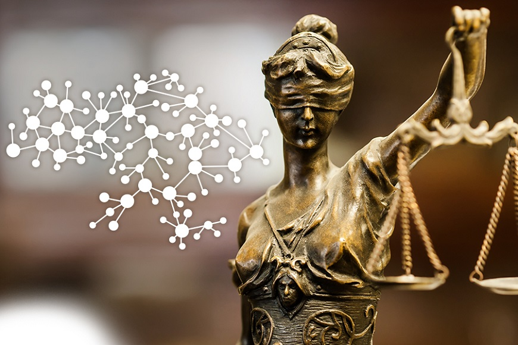

20 лютого 2024
ДЕНЬ ГЕРОЇВ НЕБЕСНОЇ СОТНІ
20 лютого 2014 року в середмісті столиці України загинула найбільша кількість осіб – 48. Їх разом з іншими 54 загиблими та смертельно пораненими учасниками мирних протестів упродовж зими 2013–2014 років і п’ятьма активістами Майдану, які загинули навесні 2014 року, відстоюючи демократичні цінності та територіальну цілісність України, назвали Героями Небесної Сотні.
Події того дня стали кульмінацією Революції Гідності. За неповернення до пострадянської моделі відносин між владою та суспільством, відмову від "багатовекторності" у зовнішньополітичному курсі, утвердження розвитку України як демократичної європейської країни заплачено дуже велику ціну – людські життя.
Із метою вшанування пам’яті громадян, які загинули під час Революції Гідності у боротьбі за ідеали демократії, права та свободи людини, європейське майбутнє України, завдяки яким було змінено хід історії нашої держави, встановлено День Героїв Небесної Сотні.
22 січня 2024

ДЕНЬ СОБОРНОСТІ УКРАЇНИ
22 січня Україна відзначає День Соборності. Цього дня у 1919 році на Софійській площі у Києві був проголошений Акт злуки Української Народної Республіки (УНР) й Західно-Української Народної Республіки (ЗУНР).
22 січня 1918 року незалежність була проголошена IV Універсалом Української Центральної Ради, а через рік, в 1919 році, в цей же день на Софійській площі у Києві відбулося офіційне об'єднання Української Народної Республіки і Західно-Української Народної Республіки. Так вперше за багато століть історичні українські регіони об'єдналися в одну державу.
27 листопада 2023
ДЕНЬ ПАМ'ЯТІ ЖЕРТВ ГОЛОДОМОРУ
Традиційно у четверту суботу листопада, яка 2023 року припадає на 25 листопада, в Україні вшановують пам'ять жертв масових голодів 1921—1923 та 1946—1947 років та Голодомору-геноциду 1932—1933 років.
В СРСР будь-які згадки про Голодомор 1932—33 років були під суворою забороною. Однак за кордоном вшановувати жертв влаштованого більшовиками геноциду в Україні почали ще у 1933 році.
Ознайомитися з матеріалами про Голодомор можна за наступними посиланнями:
День пам'яті жертв Голодоморів: традиції та програма у 2023 році
День пам’яті жертв Голодомору: українців закликають запалити свічку у вікні
27 жовтня 2023
ДЕНЬ УКРАЇНСЬКОЇ ПИСЕМНОСТІ ТА МОВИ
Щороку восени відзначають День української писемності та мови — у пам'ять про святого Нестора Літописця. Свято нагадує про давність української мови, яка є єдиною державною, про історію її абетки, розповідає про розвиток української писемності, та й загалом популяризує українську мову в Україні та за кордоном.
Ознайомитися з матеріалами про День української писемності та мови можна за наступними посиланнями:
День української писемності та мови: історія свята та самої писемності в Україні
27 жовтня - День української писемності та мови: матеріали до свята
2 жовтня 2023

ВСЕУКРАЇНСЬКИЙ ДЕНЬ БІБЛІОТЕК
Всеукраїнський день бібліотек – це справжній день єдності бібліотекарів, читачів і всієї громадськості, які розуміють вагу і значення бібліотек в житті України.
Девіз дня у 2023 року – «Бібліотека – твоя синергія Перемоги!» відзначає важливу роль бібліотек у нашій великій спільній перемозі.
Це свято, яке відзначають 30 вересня вже 25 років поспіль, не просто нагадує суспільству про важливість бібліотек, а також створює атмосферу підтримки для наших героїв-воїнів, колег і всіх українців, незалежно від їхнього місця перебування сьогодні – у бібліотеці чи в окопі.
Бібліотека тримає цінний зв'язок між минулим, сьогоденням і майбутнім. У бібліотеці гуртуються спільноти й зростають люди майбутнього, а бібліотекарі роблять усе можливе й неможливе, щоб це майбутнє в нас було.
16 травня 2023
ВИСТАВКА ДО ДНЯ МАТЕРІ "НАЙМИЛІША, НАЙРІДНІША, НАЙСВЯТІША"
День матері — міжнародне та локальне свято на честь матері сім’ї, а також материнства, материнських зв’язків та впливу матерів у суспільстві. Його відзначають у різні дні у багатьох частинах світу, найчастіше в березні чи травні. В Україні офіційно відзначається щорічно, починаючи з 2000 року, у другу неділю травня.
В інформаційному центрі бібліотеки в головному корпусі коледжу з 15 по 17 травня 2023 року розміщена виставка присвячена Дню Матері. Відвідувачі виставки можуть ознайомитися з прислів'ями та іншими висловами про матерів, а також зі сценаріями виховних заходів по даній темі. Також представлені матеріали періодичної преси.
26 квітня 2023
ВЕЧІР ПАМ'ЯТІ ЧОРНОБИЛЬСЬКОЇ КАТАСТРОФИ
Чорнобиль… Слово це стало символом горя і страждання, покинутих домівок.
Минуло 37 років від того дня, коли Україну спіткала страшна трагедія – техногенно-екологічна катастрофа, спричинена вибухом реактора четвертого енергоблоку Чорнобильської атомної електростанції, яка нанесла непоправної шкоди довкіллю та здоров’ю людей. Якби не подвиг простих людей, які ризикуючи власним життям і здоров’ям, врятували нас від подальшого поширення радіації, то важко навіть спрогнозувати повні масштаби трагедії не лише для України, а й всього світу. Низький уклін всім хто боровся зі страшною бідою. Священна пам'ять про Ваш подвиг не згасне у віках і збережеться в серцях народу.
Ознайомитися з матеріалами про Чорнобиль можна за наступними посиланнями:
Що про Чорнобиль (не)приховувала радянська влада
ЧОРНОБИЛЬ НЕ МАЄ МИНУЛОГО ЧАСУ
25 квітня 2023
КНИЖКОВА ВИСТАВКА "ВСЕСВІТНІЙ ДЕНЬ КНИГИ І АВТОРСЬКОГО ПРАВА"
Всесвітній день книги та авторського права відзначають щорічно, починаючи з 1996. Дата 23 квітня вибрана Генеральною конференцією ЮНЕСКО з огляду на її символічність – багато відомих письменників народилися чи померли саме 23 квітня. Зокрема, В.Шекспір, І. Г. де ла Вега, М. Дрюон, X.Лакснес, М. Валеджо, В. Набоков, Дж. Пла, В. Вордсворт, Г. Тютюнник та ін. Одна з головних цілей свята – промоція читання і книговидання, привернення уваги до культури писемного слова, а також до питань авторського права і захисту інтелектуальної власності.
В інформаційному центрі бібліотеки в головному корпусі коледжу з 25 по 28 квітня 2023 року розміщена виставка присвячена цій даті. Відвідувачі виставки можуть ознайомитись з новими посібниками з рослинництва і тваринництва в сучасному оформленні, з творами класиків української літератури - Т.Шевченка, І.Франка, Лесі Українки, словниково-інформаційними матеріалами, а також цікавими фактами щодо користі читання в друкованим вигляді.
4 квітня 2023
"ЗА МИТЬ ЩАСТЯ" (105 років з дня народження Олеся Гончара)
Гончар Олесь (Олександр) Терентійович (ім'я при народженні — Біличенко Олександр Терентійович; 3 квітня 1918, Ломівка, нині Дніпропетровська область, Україна — 14 липня 1995, Київ, Україна) — український та радянський письменник, прозаїк, літературний критик, політик, громадський діяч.
З 3 по 4 квітня 2023 року в інформаційному центрі бібліотеки коледжу проходить книжкова виставка присвячена цьому видатному українцю. Відвідувачі виставки можуть ознайомитися з такими творами Олеся Гончара як "Тронка", "Твоя зоря", "Прапороносці", "Собор", "Бригантина".
10 березня 2023
КНИЖКОВА ВИСТАВКА "ГЕНІЙ І ПРОРОК" (Шевченківські дні)
Тарас Шевченко - видатний український поет, прозаїк, драматург, художник, політичний і громадський діяч. Він був людиною універсальних обдарувань та інтересів. Все його життя і творчість були присвячені українському народу. Поет мріяв про ті часи, коли його країна буде незалежною суверенною державою, коли в Україні шануватимуться мова, культура та історія народу, а люди будуть щасливими.
З 9 по 10 березня 2023 року в інформаційному центрі бібліотеки коледжу проходить книжкова виставка присвячена цьому величному українцю. Відвідувачі виставки можуть ознайомитися з творами видатного поета, повною нецензурованою збіркою Кобзаря, а також ілюстраціями студентів коледжу, присвяченими окремим творам Шевченка.
8 березня 2023
МІЖНАРОДНИЙ ЖІНОЧИЙ ДЕНЬ
Любі жінки! Бібліотека Мигійського коледжу вітає вас з Міжнародним жіночим днем!
***
Я просто жінка. Просто жінка я.
П’ять букв у слові – ну куди простіше?
Я люба, я кохана, я твоя,
я та, яка на світі найрідніша.
Сумна і ніжна. Мовчазна і ні.
Я та, якій протягують долоні…
Я палена у відьомськім вогні
і писана у золотій іконі…
У муках я життя тобі даю,
і зуби зціплю – на війну пускаю.
Біля вікна задивлена стою.
Я просто жінка … і немає краю
такій ось простоті. З ребра чи ні,
я Єва, я спокусниця Адама.
Я та, якій присвячують пісні
і та, якій гукають просто «Мамо…»
Я просто жінка. Грішна і свята,
слабка і сильна, сіра і яскрава.
Я просто жінка, просто жінка. Та,
якій потрібне щастя, а не слава.
Софія Кримовська
*****
“Про жінок”
А жінка буває на осінь так схожа:
То тиха й привітна, а то непогожа,
То скропить сльозою, то сонцем засвітить,
То прагне зими, то вертається в літо.
А жінка, як осінь, плодами багата:
На ніжність, добро, материнство і свято,
Як вересень тихий, зігріє душею -
Не страшно негоду чекати із нею!
А жінка буває тривожна, як осінь:
То дихає вітром, то ласки попросить,
То болю завдасть, а то вигоїть рани,
Листочком у світ полетить за коханим!
А осінь в природі - незвідане диво,
Так само і жінка: буває вродлива,
Буває примхлива, буває чутлива,
Нехай тільки кожна з них буде щаслива!
Ліна Костенко
*****
Жіноче серце! Чи ти лід студений,
Чи запашний, чудовий цвіт весни?
Чи світло місяця? Огонь страшений,
Що нищить все! Чи ти як тихі сни,
Невинності? Чи як той стяг воєнний,
Що до побідки кличе? Чи терни,
Чи рожі плодиш? Ангел ти надземний
Чи демон лютий з пекла глибини?
Чим б'єшся ти? Яка твоя любов?
В що віриш? Чим живеш? Чого бажаєш?
В чім змінне ти, а в чім постійне? Мов!
Ти океан: маниш і потопляєш,
Ти рай - добутий за ціну оков.
Ти літо: грієш враз і громом убиваєш.
Іван Франко
Міжнародний день боротьби за права жінок — міжнародна дата, яка щорічно відзначається 8 березня на згадку про культурні, політичні та соціально-економічні досягнення жінок. Темою цієї дати також є рух за права людини, виокремлюючи права жінок.
21 лютого 2023
ЛІТЕРАТУРНА КОМПОЗИЦІЯ “ДУХОВНИЙ СКАРБ НАЦІЇ”
Міжнародний день рідної мови - день, який відзначають щороку 21 лютого, починаючи з 2000 року. Про «підтримку мовного та культурного різноманіття та багатомовності» було оголошено на XXX сесії Генеральної конференції ЮНЕСКО, що проходила 26 жовтня — 17 листопада 1999 року в Парижі.
Ознайомитися з матеріалами цієї віртуальної виставки можна за наступними посиланнями:
Ліна Костенко - "Крила"
Володимир Сосюра - "Любіть Україну"
Тарас Шевченко - "Сон (У всякого своя доля...)"
Міжнародний день рідної мови
20 лютого 2023
ВИСТАВКА "ГЕРОЇ НЕ ВМИРАЮТЬ" (ДО РІЧНИЦІ ПАМ'ЯТІ ГЕРОЇВ НЕБЕСНОЇ СОТНІ)
День Героїв Небесної Сотні — пам’ятний день, що відзначається в Україні 20 лютого на вшанування подвигу учасників Революції гідності та увічнення пам’яті Героїв Небесної Сотні.
З 20 по 22 лютого 2023 року в інформаційному центрі бібліотеки коледжу проводиться виставка, присвячена Дню вшанування Героїв Небесної Сотні. Відвідувачі виставки можуть ознайомитися з портретами і короткою біографією загиблих героїв, віршем Василя Зими “18-20… 4 роки потому…” та іншими матеріалами до даної події.
15 лютого 2023
ВЕЧІР ПАМ’ЯТІ "АФГАНІСТАН БОЛИТЬ В МОЇЙ ДУШІ"
15 лютого в Україні вшановують своїх синів — воїнів, які виконували свій інтернаціональний обов’язок на землі Афганістану. Майже 10 років проливали там кров наші військові. 15 лютого 1989 останній солдат залишив цю країну.
Ознайомитися з матеріалами цієї віртуальної виставки можна за наступними посиланнями:
"Афганістан болить в моїй душі"
Про Афганістан
27 січня 2023

ВІРТУАЛЬНА ВИСТАВКА "ДЕНЬ ПАМ’ЯТІ ГЕРОЇВ КРУТ"
29 січня в Україні відзначають річницю бою під Крутами, який для Українського народу став символом героїзму та самопожертви молодого покоління в боротьбі за незалежність, прикладом для сучасних захисників України, як успішно боротися проти численного ворога. Бій під Крутами був оборонною операцією, яка зупинила на кілька днів наступ переважних сил ворога. Ця битва символізує патріотизм, стійкість і самопожертву української молоді в боротьбі за державність.
Ознайомитися з матеріалами цієї віртуальної виставки можна за наступними посиланнями:
Перші кіборги. До річниці бою під Крутами. Інформаційні матеріали.
Про Крути з першоджерел
«Бій за майбутнє». Інформаційні матеріали до Дня пам'яті Героїв Крут–2023
23 січня 2023
ВІРТУАЛЬНА ВИСТАВКА "ДЕНЬ СОБОРНОСТІ ТА СВОБОДИ УКРАЇНИ"
Щороку 22 січня в день проголошення Акта Злуки Української Народної Республіки та Західноукраїнської Народної Республіки Україна відзначає День Соборності. Офіційно це свято встановлене Указом Президента України «Про День Соборності України» від 13 листопада 2014 року № 871. Акт Злуки став історичним об’єднанням українських земель в одній державі.
Ознайомитися з матеріалами цієї віртуальної виставки можна за наступними посиланнями:
Відеролик «Україна соборна. Разом до Перемоги!»
Відеоісторія «Українська революція 1917–1921 років. Як творилася держава»
Інформаційні матеріали до 100-річчя проголошення незалежності Української Народної Республіки
«Хай слово «Соборність» не буде тільки книжковою фразою, але щоденним хлібом та правдивою Ідеєю наших буднів!»
Михайло Дяченко (Марко Боєслав), «За соборний моноліт», 1950 рік
14 грудня 2022

ВІРТУАЛЬНА ВИСТАВКА “ДЕРЖАВА І ПРАВО”
10 грудня відзначається Міжнародний день прав людини. До поняття «Права людини» людство прийшло не відразу. Вперше про права особистості заговорили французькі просвітителі Вольтер і Жан Жак Руссо. Пройшло ще майже два сторіччя, перш ніж людство дозріло до поняття і прийняття загального кодексу прав людини. 10 грудня 1948 року Організація Об'єднаних Націй прийняла Загальну декларацію прав людини, що проголошує права особистості, цивільні і політичні права і свободи (рівність всіх перед законом, право кожного на свободу і особисту недоторканність, свободу совісті та інші).
Теорія держави і права — фундаментальна наука та навчальна дисципліна, що вивчає державу та право як явища суспільного життя, основні закономірності їхнього виникнення та розвитку, їхню сутність, призначення і функціонування в суспільстві, а також особливості політичної та правової свідомості та правового регулювання. Теорія держави та права — це наука, яка вивчає найбільш загальні закономірності виникнення, розвитку та функціонування держави та права.
До цієї дати на сайті бібліотеки коледжу предаставлена віртуальна книжкова виставка, доступна за посиланням
2 грудня 2022

ВИСТАВКА “ПРО ВІЛ/СНІД: ВКОТРЕ І ВІДВЕРТО”
1 грудня відмічається Всесвітній День боротьби зі СНІДом. Його мета – привернути увагу громадськості і нагадати суспільству, що ВІЛ/СНІД є однією з самих глобальних проблем людства. За даними Всесвітньої організації охорони здоров’я у світі з ВІЛ-інфекцією живе близько 37 мільйонів людей, серед яких 19,5 мільйонів отримують антиретровірусне лікування. В інформаційному центрі бібліотеки коледжу була проведена виставка присвячена цій даті. На даній виставці можна було ознайомитись з відповідною літературою
01 грудня 2022
КНИЖКОВА ВИСТАВКА "СКОВОРОДА НАЛЕЖИТЬ СВІТОВІ"
3 грудня 2022 року виповнюється 300 років від дня народження Григорія Савича Сковороди - видатного українського письменника, філософа, мислителя.
В інформаційному центрі бібліотеки в головному корпусі коледжу розміщена виставка, присвячена цій річниці. Відвідувачі виставки можуть ознайомитися з біографією Г.Сковороди, його вибраними творами та працями, присвяченими його біографії.
28 листопада 2022
КНИЖКОВА ВИСТАВКА "У ПАМ'ЯТЬ ПРО СКОРБОТНИЙ 1933"
27 листопада в Україні відбулися поминальні заходи з нагоди роковин геноциду, вчиненого комуністичним режимом проти селян. Злочин, з яким за масштабом не може зрівнятися жоден в світовій історії, який було скоєно для знищення українців, викорінення генетичної пам'яті про те, що ми нація, забуттю не підлягає.
В інформаційному центрі бібліотеки коледжу до цієї події була розгорнута виставка, на якій відвідувачі могли ознайомитись з книгами, присвяченими даній темі - "Голодомор 1932-1933 років - як велика трагедія українського народу" та "Голод 1932-1933 років на Україні очима істориків". Також можна ознайомитись з матеріалами періодичної преси, присвяченими цим подіям і спогадами жителів села Мигія, зібраними місцевими краєзнавцями.
04 жовтня 2021
ВИХОВНА ГОДИНА, ПРИСВЯЧЕНА МІЖНАРОДНОМУ ДНЮ МУЗИКИ
Міжнародний день музики був заснований за ініціативою Міжнародної музичної ради (IMC) при ЮНЕСКО, щорічно відзначається у всьому світі 1 жовтня.
4 жовтня 2021 в читальній залі бібліотеки Мигійського коледжу була проведена виховна година для груп В-11 та В-21 на тему: "Музика в нашому житті", присвячена Міжнародному дню музики. Протягом виховної години студенти ознайомились з біографіями та основними напрямами діяльності видатних музикантів (В.А.Моцарт, Й.С.Бах, Джузеппе Верді, Нікколо Паганіні, Л.В.Бетховен), а також прослухали фрагменти їх найвидатніших творів.
26 травня 2021
ВИХОВНА ГОДИНА, ПРИСВЯЧЕНА 150 РІЧНИЦІ ВІД ДНЯ НАРОДЖЕННЯ В.С.СТЕФАНИКА
24 травня була проведена працівниками бібліотеки виховна година для студентів групи А-11, присвячена 150 річниці від дня народження В.С.Стефаника. Бібліотекар Сосіновська Н.Л. розповіла студентам біографію письменника, зупинилась на основних фактах його творчості. Також слухачі змогли ознайомитись з кількома відеоматеріалами – класичним уроком про життєвий і творчий шлях письменника і цікавими фактами його громадської діяльності і особистого життя.
25 травня 2021
КНИЖКОВА ВИСТАВКА "СПІВЕЦЬ ЗНЕДОЛЕНОГО СЕЛЯНСТВА"
14 травня виповнилося 150 років від дня народження Василя Семеновича Стефаника – видатного українського письменника-новеліста, громадського діяча, захисника інтересів селян.
Історія світової літератури вділила йому почесне місце серед найвидатніших майстрів новельного жанру – поруч із Джованні Бокоччо, Мігелем де Сервантесом, Гі де Мопассаном, О’Генрі, Іваном Буніним, Михайлом Коцюбинським. Та ніхто з письменників не був так глибоко закорінений у село, як Василь Семенович Стефаник.
В вестибюлі головного корпусу коледжу працювала виставка, присвячена даному ювілею. Відвідувачі виставки мали можливість ознайомитись з збірками новел видатного письменника, його біографією, цікавими фактами творчості.
10 березня 2021

КНИЖКОВА ВИСТАВКА "ГЕНІЙ І ПРОРОК" (Шевченківські дні)
Тарас Шевченко - видатний український поет, прозаїк, драматург, художник, політичний і громадський діяч. Він був людиною універсальних обдарувань та інтересів. Все його життя і творчість були присвячені українському народу. Поет мріяв про ті часи, коли його країна буде незалежною суверенною державою, коли в Україні шануватимуться мова, культура та історія народу, а люди будуть щасливими.
З 9 по 11 березня 2021 року у головному корпусі коледжу проходить книжкова виставка присвячена цьому величному українцю. Працівники коледжу і студенти можуть ознайомитися з творами видатного поета, повною нецензурованою збіркою Кобзаря, а також ілюстраціями студентів коледжу, присвяченими окремим творам Шевченка.
26 лютого 2021
КНИЖКОВА ВИСТАВКА "ДОЧКА ПРОМЕТЕЯ" (150 років від дня народження Лесі Українки)
25 лютого 2021 року виповнилось 150 років від дня народження Лесі Українки - української поетеси, драматурга і громадської діячки, класика української літератури.
Леся Українка — одна з найвизначніших постатей в історії української літератури. По собі вона залишила великий літературний доробок - вражаючі поеми, прозові твори, вірші, публіцистичні статті, переклади світової класики.
З 25 по 26 лютого 2021 року у вестибюлі коледжу відкрита книжкова виставка присвячена цьому ювілею. Відвідувачі цієї виставки можуть ознайомитися з основними віхами біографії видатної поетеси, збірками її творів - ліричних, драматичних, поезій для дітей. Також розміщені статті з періодичних видань, присвячені даній події.
22 лютого 2021
ВИСТАВКА "ГЕРОЇ НЕ ВМИРАЮТЬ" (ДО РІЧНИЦІ ПАМ'ЯТІ ГЕРОЇВ НЕБЕСНОЇ СОТНІ)
День Героїв Небесної Сотні — пам’ятний день, що відзначається в Україні 20 лютого на вшанування подвигу учасників Революції гідності та увічнення пам’яті Героїв Небесної Сотні.
З 18 по 20 лютого 2021 року в головному корпусі коледжу проводилась виставка, присвячена Дню вшанування Героїв Небесної Сотні. Студенти і викладачі коледжу можуть ознайомитися з портретами і короткою біографією загиблих героїв, з книгами, присяченими даній події: “Я з Небесної Сотні”, “Майдан. Приватний щоденник”. Також можна ознайомитись з віршем Василя Зими “18-20… 4 роки потому…”
18 лютого 2021

ВИСТАВКА "ПОДВИГ, БІЛЬ, ПАМ'ЯТЬ" (ДО РІЧНИЦІ ВИВЕДЕННЯ РАДЯНСЬКИХ ВІЙСЬК З АФГАНІСТАНУ)
Щорічно 15 лютого в Україні відзначають День вшанування учасників бойових дій на території інших держав.
15-17 лютого 2021 року у вестибюлі головного корпусу коледжу проводилась виставка на тему: «Подвиг, біль, пам’ять», присвячена 32-ій річниці виведення радянських військ з Афганістану. Викладачі, студенти й гості коледжу ознайомились з художніми і документальними творами, присвяченими війні в Афганістані: «Велика місія», «Афган, прописаний у серці», «Лелека», «Афган: біль і пам’ять», «Афганістан болить в моїй душі».
12 грудня 2020
“У ПАМ’ЯТЬ ПРО СКОРБОТНИЙ 1933”
День пам’яті жертв голодоморів відзначається щорічно в четверту суботу листопада на підставі президентських указів 1998 та 2007 років. У ХХ сторіччі українці пережили три голодомори: 1921-1923, 1932-1933 і голод 1946-1947 років. Утім, наймасштабнішим був Голодомор 1932-1933 років – геноцид українського народу, здійснюваний тоталітарним комуністичним режимом СРСР. З 25 по 28 листопада у вестибюлі головного корпусу…
Читати далі